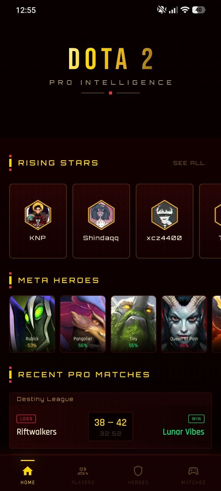
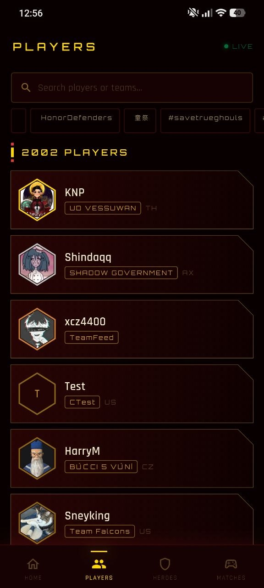
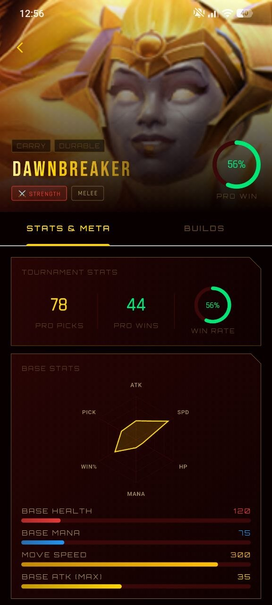
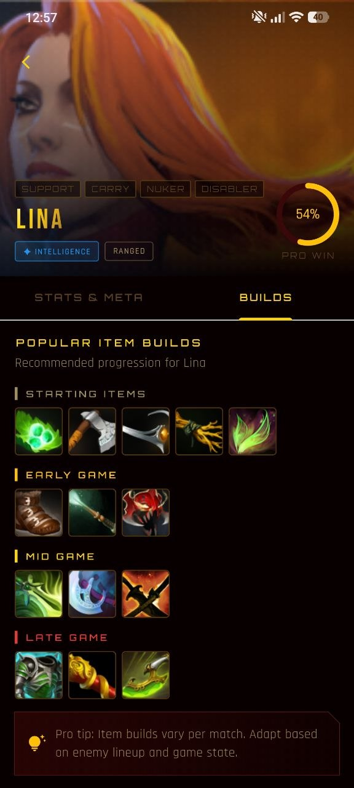

Meta heroes
Explore hero cards with pick counts, attributes, and pro win-rate percentages.
Olimp Meta Tracker gives Dota 2 fans a sharp competitive dashboard with live-style sections for rising stars, meta heroes, pro matches, player profiles, hero win rates, tournament stats, and recommended builds.



Premium features
The app feels like a pro esports control room: glowing hero cards, live match lists, player panels, win-rate circles, tournament counters, and build progression.
Explore hero cards with pick counts, attributes, and pro win-rate percentages.
Follow recent match results with teams, scores, match length, wins, and losses.
Open player detail pages with recent performance, KDA, kills, deaths, assists, and KDP.
View tournament picks, pro wins, win rate rings, base stats, and hero role tags.
Study starting, early game, mid game, and late game item progressions for heroes.
Dark red panels, gold typography, neon stats, angular borders, and esports energy.
Screen showcase
Preview the most important areas: home, players, heroes, hero stats, builds, and match intelligence.

Why users like it
Instead of raw numbers, the app presents competitive insights in a visual format: cards, rankings, rings, score blocks, hero panels, and build paths.
Hero cards let users quickly compare picks, attributes, and win-rate strength.
Scores, winners, leagues, and match durations are presented in compact panels.
Hero detail pages combine role tags, tournament stats, win rate, and item builds.
Workflow
Start with rising stars, meta heroes, and recent pro matches.
Search players and open profiles with recent performance and average KDA.
Filter hero roles, compare pro win rates, and review tournament stats.
Use recommended item paths for starting, early, mid, and late game decisions.
Highlights
Dark panels, golden headings, red shadows, neon green win rates, and angular cards create a pro intelligence style.
“The hero cards make meta scanning fast and satisfying.”
Dota fan“Player profiles and match lists feel like a real esports dashboard.”
Competitive viewer“The build screen is clean and easy to read before a match.”
Hero analystDownload now
Download Olimp Meta Tracker to explore heroes, players, matches, pro win rates, tournament stats, and item builds in a premium cyber interface.